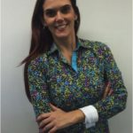
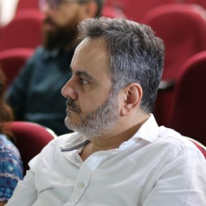

Quem somos
Lista dos pesquisadores presentes na fundação da associação em 2019/2020, no seu capitulo brasileiro, os quais emprestaram seu esforço ou seu currículo para fazer avançar a iniciativa. São todos “sócios-fundadores”, e alguns mantém sua atuação. O NCOR-Brasil agradece a participação e o apoio!!
Amanda Damasceno de Souza
PhD em Gestão & Organização do Conhecimento. Pesquisa fontes de informação e ontologias aplicadas na saúde, vocabulários biomédicos.
Cristiano Moreira
PhD Candidate, Gestão & Organização do Conhecimento. Pesquisa a aplicabilidade dos artefatos da Ciência da Informação para a gestão e organização do conhecimento nas organizações.
Eduardo Ribeiro Felipe
PhD em Gestão & Organização do Conhecimento. Pesquisa em Recuperação da informação automática.
Fabricio Martins Mendonça
PhD em Ciência da Informação. Organização e recuperação da informação, construção de ontologias, modelagem conceitual, informática médica e processamento de linguagem natural.
Fernanda Farinelli
PhD em Ciência da Informação. Ontologista do Projeto OntONeo (Ontologia obstétrica e neonatal). Pesquisa ontologias formais realistas como solução de integração semântica de dados.
Guilherme Francis de Noronha
PhD Candidate, Gestão & Organização do Conhecimento. Pesquisa recuperação, tratamento e uso da informação; processamento de linguagem natural; inteligência artificial e ontologia aplicada.
Heliana Mello (conselheira científica)
PhD em Linguística. Professora Titular da Faculdade de Letras da UFMG. Coordenadora do Laboratório de Estudos Empíricos e Experimentais da Linguagem e coordenadora do projeto C-ORAL Brasil.
Jeanne Louize Emygdio
PhD em Gestão & Organização do Conhecimento. Pesquisa Representação do Conhecimento e Ontologia Aplicada. Especialista em Interoperabilidade e integração semântica baseada em ontologias.

Livia Marangon Duffles Teixeira
PhD em Gestão & Organização do Conhecimento. Representação do Conhecimento, Ontologia aplicada à saúde e setor elétrico, taxonomias corporativas, Arquitetura de Informação.

Maurício Barcellos Almeida (Conselheiro Científico)
PhD em Ciência da Informação. Representação do Conhecimento, Ontologia Aplicada, Arquitetura da Informação Corporativa, Vocabulários e Terminologias para Sistemas de Informação.
Murillo Modesto
PhD Candidate em Inovação & Tecnologia. Aquisição do Conhecimento, Vocabulários técnicos para Sistemas de Informação.
Renata Barcelos Moreira Santos
PhD em Administração. Ontologia aplicada às organizações, inovação, e conhecimento aplicado às estruturas e processos organizacionais.
O National Center for Ontological Research (NCOR) – criado e dirigido pelo Dr. Barry Smith – foi fundado em Buffalo (New York, Estados Unidos da America) nos anos 2000 com o objetivo de aprimorar a qualidade da pesquisa e do desenvolvimento de ontologias, além de investigar e desenvolver ferramentas e estratégias para avaliação e garantia de qualidade dos artefatos ontológicos.
NCOR-BR
O NCOR-BR – uma associação sem fins lucrativos – consiste em uma rede dinâmica de pesquisadores, profissionais e estudantes comprometida em desempenhar um papel ativo nas discussões sobre a Ontologia Aplicada, disseminando conhecimento e boas práticas para suportar artefatos ontológicos de alta qualidade.
O NCOR-BR é um capítulo brasileiro do NCOR que nasceu de mais de uma década de discussões de um grupo de pesquisadores da Ciência da Informação.
Escopo e atuação do NCOR-BR
O NCOR-BR é uma instituição nascida da pesquisa e prática da Ciência da Informação, ainda que voltada para profissionais da informação na acepção ampla do termo:
- Estudantes e pesquisadores da Ciência da Informação;
- Estudantes e pesquisadores de áreas afins, como Ciência da Computação, Sistemas de Informação;
- Analistas de sistemas de informação, bibliotecários, linguistas, cientistas de dados, programadores, administradores de bancos de dados.
Objetiva ainda auxiliar executivos e gerentes de tecnologia da informação que buscam um salto qualitativo nas práticas de gestão da informação de seus ambientes profissionais.
No momento, a NCOR-BR ainda não aceita associados pessoa física e o estatuto ainda não está disponível.
The National Center for Ontological Research (NCOR) – created and directed by Barry Smith – was founded in Buffalo (New York, United States of America) in the 2000s with the aim of improving the quality of research and development about Applied Ontology, in addition to investigating and developing tools and strategies for the evaluation and quality assurance of ontological artifacts.
The NCOR-BR
NCOR-BR – a non-profit association – consists of a dynamic network of researchers, professionals and students committed to playing an active role in discussions on Applied Ontology, disseminating knowledge and good practices to support high quality ontological artifacts.
NCOR-BR is the Brazilian chapter of NCOR, which was born from more than a decade of discussions within a group of researchers in Information Science.
Scope and Acting
The NCOR-BR is an institution born from the research and practice of Information Science, although it is aimed at information professionals in the broad sense of the term, for example:
- Students and researchers in Information Science;
- Students and researchers from related fields, such as Computer Science, and Information Systems;
- Information systems analysts, librarians, linguists, data scientists, programmers, database administrators, and similars.
It also aims to assist executives and information technology managers who seek a qualitative leap in the information management practices in their professional environments.